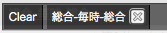

ニコ動早見所の使い方
1. 初期画面
図 1 は、ニコ動早見所の初期画面を表しています。 ページ上部に、 5 つの機能 (リモコンボタン、フィルタボタン、タブ切替、検索窓、ナビゲーション) が並んでいるのが分かると思います。 この 5 つの機能の内容は、それぞれ以下になります。
- リモコンボタン: 表示するランキング等を指定するリモコンを起動および、終了します。
- フィルタボタン: 条件にあった動画のみを表示するフィルタ機能を起動および、終了します。
- タブ切替: 表示するタブを切り替えます。タブは合計 3 つあります。
- 検索窓: キーワードを入れて、enter キーを押すと、 ニコニコ動画の検索ページに飛びます。
- ナビゲーション: ニコニコ動画やニコ動早見所に関連するページへのリンク集です。
ニコ動早見所を使いたい場合、まず、「リモコンボタン」 を押してください。
2. リモコン
リモコンボタンを押すと、図 2 にようなリモコンが表示されます。 もう一度、リモコンボタンを押すと、リモコンは消えます。 リモコンを使うことで、ニコ動早見所に、 ランキングや指定したタグの動画リストを表示することができます。
リモコンには、現在 6 つの機能があります。
-
表示中の動画の編集:
黒いラインに、図 3 のように現在表示しているランキングまたは、 タグ名が表示されるので、閉じるボタンや Clear (全消去) ボタン を使って、表示するランキングやタグを編集します。 表示するランキングやタグの追加の方法は、以降の項目で説明します。 図3: 表示中の動画の編集例 -
表示するランキングの選択:
表示したいランキングを選択します。対象(ランキングの計算方法: 再生数、コメント数、マイリス数、総合)と、期間 (ランキングの集計期間: 毎時、デイリー、週間、月間、合計) を指定し、見たい動画のジャンルのボタンをクリックすることで、 見たいランキングが画面上に表示されます。 -
表示する新着投稿 or コメント動画の選択:
新着投稿動画または新着コメント動画を表示したい時に選択します。 ボタンをクリックすると、対応する新着投稿またはコメント動画の リストが表示されます。 -
表示する動画のタグの選択:
タグ名を入力し、決定することで、 入力したタグ名を持つ動画のリストが表示されます。 ソート方式を変更することで、投稿日時が新しい順や 再生数が多い順等に動画を表示することができます。 -
表示するマイリストの選択:
マイリスト ID を入力し、決定することで、 ID に対応するマイリストが表示されます。 -
他ブラウザへのデータのインポート/エクスポート:
他ブラウザにセーブデータおよびブックマークを移動させられます。 エクスポートを選択し英数字のユーザ名とパスワードを入力すれば、 一時的(最小で 1 時間だけ)に、 あなたのニコ動早見所のセーブデータおよびブックマークをサーバにアップできます。 反対に、インポートを選択しエクスポートの時に使った 英数字のユーザ名とパスワードを入力すれば、 アップしたセーブデータおよびブックマークをブラウザにダウンロードできます。 これにより、他のブラウザに移行する際、わざわざ手入力で設定し直す必要が 無くなります。
但し、この通信は暗号化されていないので、 ユーザ名とパスワードはできるだけ他のサイトで 使っていない簡単なものにして下さい。
「1つのタグには、最高 6 つまで」 動画のリストを表示することができます。 リモコンで選択した設定は、ブラウザに保存されます。 このため、複数のブラウザで設定を共有することはできません。 リモコンを使って、表示したい動画のリストを選択し、 快適な動画リスト集を作ってください。
3. 動画リスト
図 4 は、ニコニコ動画で動画リストを表示したときの例を表しています。 各動画リストは、図 5 のような、 四角いスクロールバー付きの動画情報のまとまりから成ります。 各動画情報には、サムネイル、動画タイトル(動画へのリンク)と 4 つの機能ボタン(「詳細」ボタン、「にこさうんど」ボタン、 「大百科」ボタン、「☆」ボタン)があります。 動画タイトルにマウスオーバーすると、簡単な動画の情報が、 ページ下部に表示されます。また、動画タイトルの横にある、 ウインドウが重なった画像をクリックすると 別ウインドウまたは、別タグで動画を開きます。 それでは、以下では、4 つの機能ボタンについて取り上げます。
3.1. 「詳細」ボタン
「詳細」ボタンを押すと、図 6 のような、動画詳細情報が 表示されます。もう一度、「詳細」ボタンを押すか、 動画詳細情報の灰色の部分をクリックすると消えます。 最新コメントやタグを確認できるので、 釣り動画を見分けたり、アンチ・信者の多い動画かどうかを 確認できます。
3.2. 「にこさうんど」および 「大百科」ボタン
「にこさうんど」および「大百科」ボタンは、クリックすると、 その動画のにこさうんどや大百科のページに飛ぶことができます。 あくまで、その動画の大百科に飛ぶので、 ボカロ系の動画しか充実した結果は得られないかもしれません。 逆に、ボカロ系の大百科に飛べば、歌詞や作曲者情報などが書かれた、 大百科に素早くアクセスすることができます。
3.3. 「☆」ボタン
☆ボタンをクリックすると、その動画がブックマークされます。 詳しくは、「4. ブックマーク」 で紹介します。
4. ブックマーク
ニコ動早見所では、「☆」ボタンをクリックすることで、 動画をブックマークすることができます。 ブックマークされた動画は、 図 7 のように、ブックマークリストに表示されます。 「☆(黒星)」状態は未ブックマークを、 「★(白星)」状態はブックマークされていることを表します。 ブックマークリストには、 「1 グループ辺り最大 100 個まで」 動画をブックマークできます。
ブックマークリストには、4 つのグループがあります。 未分類とグループ A 〜 C です。 ブックマークリストのタイトル横にある、 セレクトメニューでグループを指定すると、 そのグループにブックマークされた動画を見ることができます。 あるグループに、動画をブックマークをしたい場合、 以下の 2 つの方法があります。
- ブックマークリストのタイトルメニュー横のセレクトメニューを、 登録したいグループに設定した上で「☆」ボタンを押す。 「☆」ボタンを押した動画は、 その時に指定されているグループにブックマークされます。
- 「☆」ボタンを押して、ブックマークしたあとに、 ブックマークリストの動画情報内にある 「移動先」のセレクトメニューを登録したいグループに変更する。 「移動先」のセレクトメニューを変更することで、 その動画は変更した値のグループに登録されます。
動画をブックマークしておけることで、 時間がないときにマークしておいた動画を、 時間があるときに後から確認することができます。
5. タブの切替
ニコ動早見所では、タブを切り替えることで、 「3. 動画リスト」 の図 4 にあったような動画リスト表示画面を、 合計 3 パターンまで作ることが可能です。 ページ上部にある 1、2、3 のボタンを押すと、タブが切り替えられます。 タブを切り替えると、切り替える前と同じ、 ニコ動早見所が表示されます。しかし、切り替えた先で、独立して、 表示される動画のリストを設定し直せるので、タブごとに、 表示される動画リストを個別に設定しておくことで、 タブを切り替えるだけで、 計 3 パターンの動画リストのセットを閲覧できます。
1 つのタブは、表示する動画リストの設定は他のタブと独立しており、 ブックマークリストは、全てのタブで共有されます。 どのタブでも利用出来る機能は同じです。 セーブ枠が増えたと思って頂ければ、結構です。
6. フィルタリング
ニコ動早見所では、動画リストに表示されている動画の内、 一定の条件にのみに一致する動画のみを表示する 「フィルタリング機能」がついています。 フィルタリング機能は、ページ上部のヘッダーにあるフィルタボタンを クリックすることで起動します。
フィルタボタンを押すと、図 8 のような入力フォームが表示され、 表示したい動画の条件を入力することができます。 決定ボタンを押すと、 スタックに「FILTER X」と書かれたチェックボックスが追加されます。 この時点では、フィルタリングされていません。 フィルタリングするためには、 図 9 のようにチェックボックスをオンにする必要があります。 チェックボックスは、 閉じるボタンか Clear ボタンを押すと消すことができます。
例えば、再生数 100000、マイリスト数 1000 と入力し、 実行ボタンを押すと、 再生数 100000、マイリスト数 1000 以上の動画のみが表示されます。 同様に、タイトル・主コメに、エルシャダイ と入力し実行すると、 タイトルか投稿者コメントにエルシャダイが含まれた動画のみが、 表示されます。ただし、タグを指定して作った動画リストは、 再生数・コメント数・マイリスト数 によるフィルタリングができません。
フィルターの内容を確認するためには、 チェックボックスの上にマウスカーソルをあわせて下さい。 簡単ではありますが、図 10 のように条件が表示されます
フィルターは、最大 5 つまでセーブすることができます。 これにより、複数のフィルターを同時に起動させることができます。 フィルターを同時起動は、図 11 のように、 起動させたいフィルターのチェックボックスをチェックするだけです。